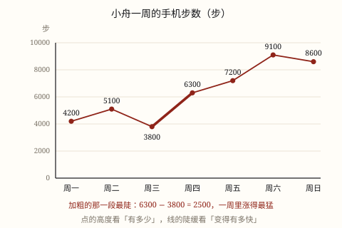

折线统计图
把每个时刻的数量描成点，再按先后顺序连成线。点的高度看有多少，线的陡缓看变多快——但「陡」不等于「多」，横轴的间隔也得相等才比得了坡度。
| 所属主题 | 统计图 |
|---|---|
| 所属模块 | 统计与概率 |
| 课标学段 | 第三学段（5~6年级） |
| 前置知识 | 条形统计图 |
| 核心素养 | 数据意识几何直观 |
教材定位
人民教育出版社《2024年版》
对应五下第 5 单元「折线统计图」：单式折线统计图与复式折线统计图。
课标要求
| 统计与概率·数据的收集、整理与表达 | 认识折线统计图、扇形统计图；会用条形统计图、折线统计图呈现相关数据，解释所表达的意义。 印刷第 39 页 行为动词：掌握 |
|---|---|
| 统计与概率·数据的收集、整理与表达 | 能从各种媒体中获得所需要的数据，读懂其中的简单统计图表（例44）。 印刷第 39 页 行为动词：了解 |
说明
体育老师想知道小舟这学期的跳绳有没有进步。四次测验的成绩是 118、124、121、136 下。四个数排成一行，只能说「最后一次最多」，「有没有进步」却说不清——因为进步是在时间上发生的，得看先后。把四次成绩按时间排开，一次一个点，点与点连起来：线往上走，就是在进步（图 1 用的是另一种数据，读法一样）。
折线统计图的结构：横轴通常是时间（日期、时刻、第几次），纵轴是数量；每个数据描一个点，按时间顺序用线段顺次连起来，点旁标出数。描点、连线、标数，三步不能少。
读折线图要同时读两样东西：点的高度告诉你那一刻有多少，线的陡缓告诉你变化得快不快。这两件事必须分开看，混在一起最容易出错：从 3800 步涨到 6300 步那一段最陡，说明涨得最多；可它的高度还不如周六的 9100 步，说明数量并不是最多。
折线图的横轴必须「有序」。日期、时刻、年级、第几次测试，这些都有先后，可以连；苹果、香蕉、梨的销量没有先后，一连起来就等于编出一个根本不存在的「过程」。
横轴的间隔也要相等。每隔一周测一次就等距画；要是第一次隔 1 天、第二次隔 1 个月，直接等距画会把真实的变化夸大或缩小。间隔不等，坡度的比较就失效了。
折线图比条形图多给了一样东西——变化；但它看不出各部分占总数的几成，那是扇形图的事。
使用场景
上学日常：手机步数、每天的作业用时、一周的睡眠时长，看自己哪几天「掉下去」了。
自然现象：一天里几个时刻的气温、一个月的降水量、连续几天的空气质量，天气 App 上最常见的图就是它。
校园生活：一学期几次跳绳或跑步测试的成绩、每月借书量，进步还是退步，线上一目了然。
家庭与年龄：每年生日量一次身高，连成线看生长速度，哪一段长得最快。
金融理财：储蓄罐里每个月的余额，看存钱是稳还是在掉。
注意点
点必须按顺序连，不能从最后一个点倒着连回去，也不能把点连成一个封闭的圈。
别把线延长出去当预言。「照这样下去明年会怎样」不是图说的，是猜的。线只记录已经发生的事。
坡度要结合刻度看。同一个变化，横轴一格代表一天还是一年，画出来的陡缓完全不同。
横轴间隔要相等，否则相邻两段的陡缓没法比较。
没有先后顺序的类别不要连折线。四种水果、四个班级，用条形图。
为什么是这样

图 1：点的高度是当天的步数，线的走势是一周的变化；最陡的那一段，才是变化最大的那一段
算理推导
为什么可以「连」：相邻两次测量之间，数量是一点点变过来的，不是凭空跳过去的。两点之间的线段，就是对这段「中间过程」的近似——所以折线图适合有时间先后的事。
为什么点的高度可靠、坡度不那么可靠：点的高度直接对到纵轴刻度，一格代表多少是写明的；坡度却同时受两个轴影响，横轴拉长一点，同样一段变化立刻变平。所以读坡度，先看两个轴各代表什么、一格是多少。
为什么陡不等于多：陡说的是「这一段变化了多少」，多说的是「这一刻有多少」。图 1 里周三到周四那一段最陡（涨了 2500 步），可它的最高点 6300 步远不如周六的 9100 步。两件事，两把尺子。
为什么只能连有序的数据：折线的本质是「过程」，没有先后的事物之间没有过程可言。硬把苹果、香蕉、梨连起来，读者会以为销量在「一路上升」，其实那就是四个并列的数。
动手实验
连续 5 天在早上 7:50 记录教室的温度（或者自己起床后的体温），先按日期顺序描点连线，读出「哪天开始变暖」。再把同样的五个数故意打乱顺序重画一次：线立刻变成一团乱麻，什么也读不出来。这说明——折线图的横轴顺序，本身就是信息的一部分，不是随便排的。
按场景的例题
例 1（场景：上学日常） 一周步数的折线图
看图 1：小舟周一到周日的步数是 4200、5100、3800、6300、7200、9100、8600。哪天走得最多？哪两天之间涨得最猛？
解：比较七个点的高度，9100 最大，是周六。相邻两天的变化：5100-4200=900、3800-5100=-1300、6300-3800=2500、7200-6300=900、9100-7200=1900、8600-9100=-500。最大的一段是周三到周四，涨了 2500 步，也是图上最陡的一段。
答：周六最多（9100 步）；周三到周四涨得最猛，多了 2500 步。
例 2（场景：自然现象） 一天五个时刻的气温
某天 8 时、10 时、12 时、14 时、16 时的气温分别是 18℃、21℃、24℃、26℃、23℃。最高气温出现在几点？14 时到 16 时是升还是降，变化多少？
解：五个点里 26 最大，对应 14 时。14 时到 16 时从 26 降到 23：26 - 23 = 3（℃），这一段线是往下走的。
答：最高 26℃，出现在 14 时；14 时到 16 时下降 3℃，线往下斜。
例 3（场景：校园生活） 一学期四次跳绳测试
小舟四次一分钟跳绳的成绩是 118、124、121、136 下。把这四次画成折线图，总体是进步还是退步？哪一次掉了？从第一次到第四次一共提高了多少下？
解：四次按顺序连线：118→124 上升，124→121 下降，121→136 上升。总体从 118 到 136，136 - 118 = 18 下，是进步。中间第三次比第二次少了 124 - 121 = 3 下。
答：总体进步，提高了 18 下；第三次小幅退步 3 下。一次退步不等于整体在退步，要看整条线的走向。
例 4（场景：家庭与年龄） 每年生日量身高
小舟出生时身高 50 厘米，1 岁 76 厘米，2 岁 88 厘米，3 岁 96 厘米。画成折线图，哪一段最陡？这说明了什么？
解：三段的变化：76 - 50 = 26、88 - 76 = 12、96 - 88 = 8（厘米）。0 岁到 1 岁涨了 26 厘米，是三段里最多的，所以这一段最陡。
答：出生后第一年那一段最陡，一年长了 26 厘米；之后每年长高的速度在变慢，线越来越平。
常用推论
折线图能同时读出「有多少」和「怎么变」：点看数量，线的走向看增减。
同一刻度下，线段越陡，这一段的变化越大；水平的一段表示基本没变。
折线往上表示增加，往下表示减少；相邻两点的高低差，就是这一段变化的数量。
横轴必须是有先后顺序的量，且间隔相等，坡度才能互相比较。
折线图记录的是已经发生的事，把线往外延长只是猜测，不是数据。
易错点
错把苹果、香蕉、梨、葡萄四种水果的销量画成折线图，说「销量一路上升」。
为什么错四种水果之间没有先后顺序，连线等于凭空造出一个「过程」，读者会误以为存在时间上的变化。
正确比较并列的几类，用条形图；只有横轴是时间（或有先后）的量，才用折线图。
错看到某一段线特别陡，就说「这一段时间的数量最多」。
为什么错陡说的是「变化大」，不是「数量多」。从 3800 涨到 6300 的那段最陡，可它的高度低于 9100。
正确问数量看点的纵坐标，问变化看相邻两点的差。两个问题分开回答。
错照着前几个月的走势把线往右延长，说「照这样下去，年底一定能达到 10000 步」。
为什么错折线只记录已经测得的数据，延长出去的部分没有任何数据支撑，只是猜测。
正确可以说「前几个月在上升」，不能说「以后一定继续上升」。要预测，得说明这是估计，并给出依据。
错第一次隔 1 天测、第二次隔 1 个月测，却把两个点画得一样远。
为什么错横轴间隔不等距，坡度的含义就被歪曲了：一个月的增长被压缩成和一天一样宽。
正确横轴按相同的时间间隔取点；间隔确实不同时，要在横轴上按实际长短画，并注明。
直观理解
折线图像一条爬山路线：每个点是你站过的位置，连线是你走过的路。看高度知道你爬到了多高，看坡度知道你在费力上坡还是在往下滑。站在山顶那一点最高，可最费劲的那一段往往在半山腰——高度和坡度，从来不是一回事。
描点连线看变化，点看多少线看坡；横轴有序才连得，陡缓还要看刻度。